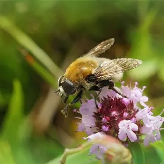

dom 22 nov · dalle 09:30
Agribus delle Valli: edizione speciale “Api_Cultura”
Domenica 22 novembre - Dalle ore 9:30 alle ore 16:00 Ritrovo presso il parcheggio della vecchia stazione dei treni di Cividale del Friuli Quest’edizione dell'Agribus rientra nel progetto “Api_Cultura nelle Valli del Natisone e del Torre”, realizzato dal Comune di Stregna per…
 Indicazioni
Indicazioni
- Costi e prenotazioni
- Costo non indicato · Prenotazione non indicata
- Programma
- Programma da verificare. Apri la fonte ufficiale per orari e possibili aggiornamenti.
- In caso di maltempo
- Nessuna indicazione specifica pubblicata.
- Note
- Acquisito automaticamente dalla fonte.
L’EVENTO
Descrizione completa
Quest’edizione dell'Agribus rientra nel progetto “Api_Cultura nelle Valli del Natisone e del Torre” , realizzato dal Comune di Stregna per preservare, sostenere e valorizzare la biodiversità e le piccole produzioni di pregio di questi territori. Sarà quindi un'occasione per conoscere e dialogare con piccoli produttori "eroici", che praticano ancora un'apicoltura stanziale, rispettosa dell'ambiente e legata a boschi incontaminati e fioriture di prati stabili. La giornata inizierà con una prima sosta a Tribil Superiore, in comune di Stregna, un caratteristico borgo situato a 642 metri s.l.m, dove ad accoglierci ci sarà Matteo, titolare dell' Azienda agricola “Le Api del Lago” . Matteo ad oggi conduce circa 80 alveari e visitando il suo laboratorio attrezzato per dimostrazioni e visite, potrete soddisfare ogni vostra curiosità sulla vita dell'alveare. Restando sempre a Tribil Superiore, raggiungeremo il rifugio Tribiltribù, struttura che sorge negli spazi che un tempo ospitavano la scuola del paese. Qui ci fermeremo per il pranzo e per la degustazione dei mieli dell'Azienda del Lago, visitata poco prima. Menù proposto :
Pane di accompagnamento
Affettato di Salame
Minestrone caldo di verdure e legumi
Frittate al forno La giornata proseguirà con la visita al piccolo caseificio di Elisa Manig a San Pietro al Natisone. Elisa alleva mucche di razza Pezzata Rossa e la sua attività si distingue per una filosofia produttiva fortemente legata alla tutela della biodiversità aderendo al progetto dei prati stabili di Slow Food.
Dopo la visita, ci attenderà una degustazione di formaggi in abbinamento a miele dell' Azienda Cedarmas , di San Pietro al Natisone, la cui produzione si concentra perlopiù nel borgo di Mezzana, in laboratori immersi nel bosco, lontano da ogni possibile fonte di inquinamento. Una giornata ideale per degustare mieli di alta qualità, sia in abbinamento e sia come prodotto a sé e contemporaneamente approfondire il ruolo delle api come sentinelle ambientali e il ruolo degli apicoltori come custodi della biodiversità. Orari:
09.30: ritrovo dei partecipanti a Cividale del Friuli (stazione vecchia) e partenza in pullman
10.00: visita dell’azienda “Le api del Lago" (Tribil superiore, 41-Stegna)
12.00: buffet-degustazione presso il rifugio “Tribiltribù” (Tribil) in abbinamento ai mieli “Le api del Lago”
13.30: spostamento in pullman a Tiglio ( San Pietro al Natisone)
14.00: visita dell’azienda agricola di Elisa Manig e degustazione di formaggi di sua produzione abbinati al miele dell’Azienda Cedarmas
16.00: rientro a Cividale Posti limitati, prenotazione obbligatoria Scopri i protagonisti dell’evento: visita i loro siti per conoscere storia, prodotti e attività:
Azienda Agricola "Le api del lago": profilo Facebook
Azienda Agricola Manig: profilo Facebook
Azienda Agricola Cedarmas: profilo Facebook Progetto del Comune di Stregna finanziato dalla LR n. 21/2016, art. 62, comma 1 lett. a) e b) della Regione FV
IL PROGRAMMA
Programma e orari
Appuntamenti raccolti dalle fonti elencate. Dove manca un orario, non è ancora disponibile in questa scheda.
Programma pubblicato
- 09.30: ritrovo dei partecipanti a Cividale del Friuli (stazione vecchia) e partenza in pullman
- 10.00: visita dell’azienda “Le api del Lago" (Tribil superiore, 41-Stegna)
- 12.00: buffet-degustazione presso il rifugio “Tribiltribù” (Tribil) in abbinamento ai mieli “Le api del Lago”
- 13.30: spostamento in pullman a Tiglio ( San Pietro al Natisone)
- 14.00: visita dell’azienda agricola di Elisa Manig e degustazione di formaggi di sua produzione abbinati al miele dell’Azienda Cedarmas
- 16.00: rientro a Cividale
INFORMAZIONI UTILI
Prima di partire
- Controllare la fonte prima di partire.
ORGANIZZAZIONE